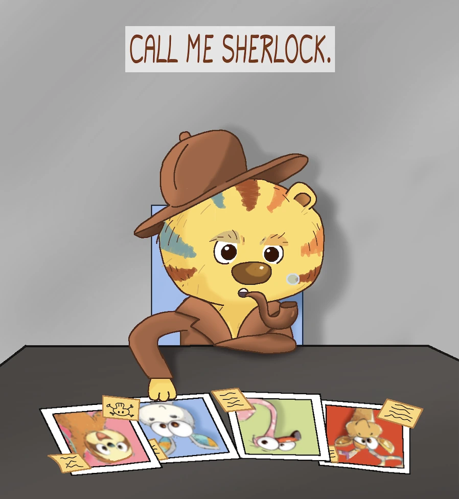
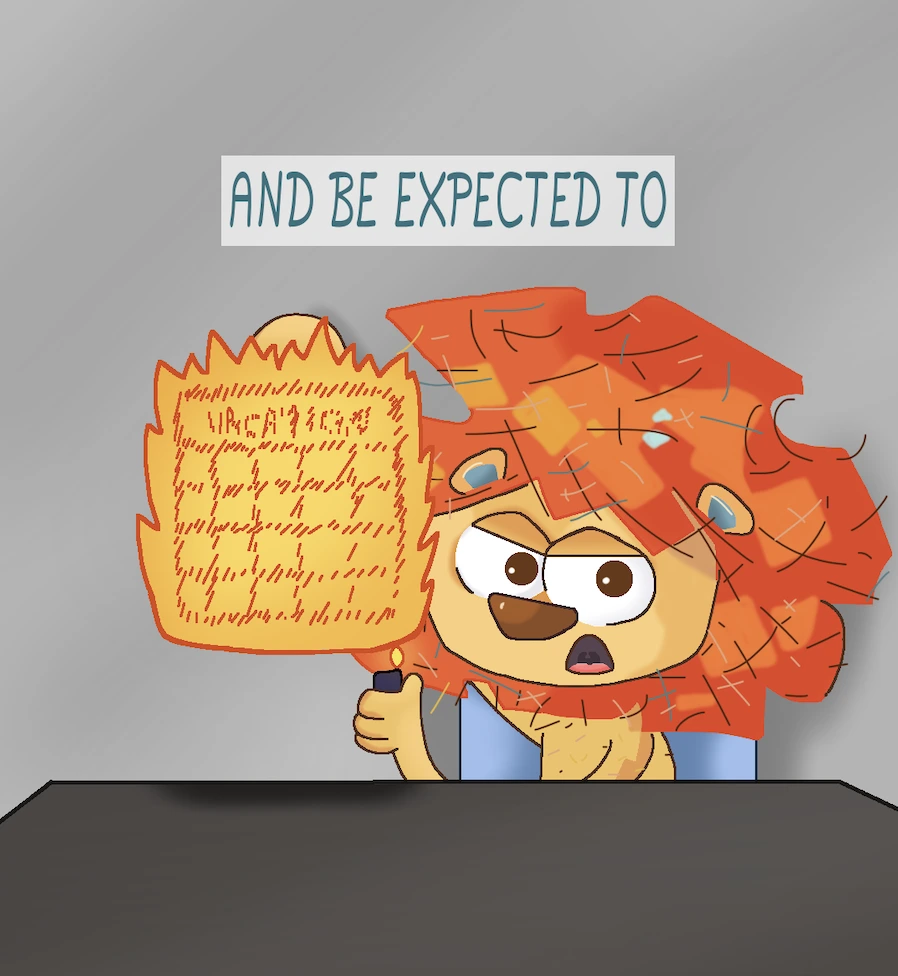
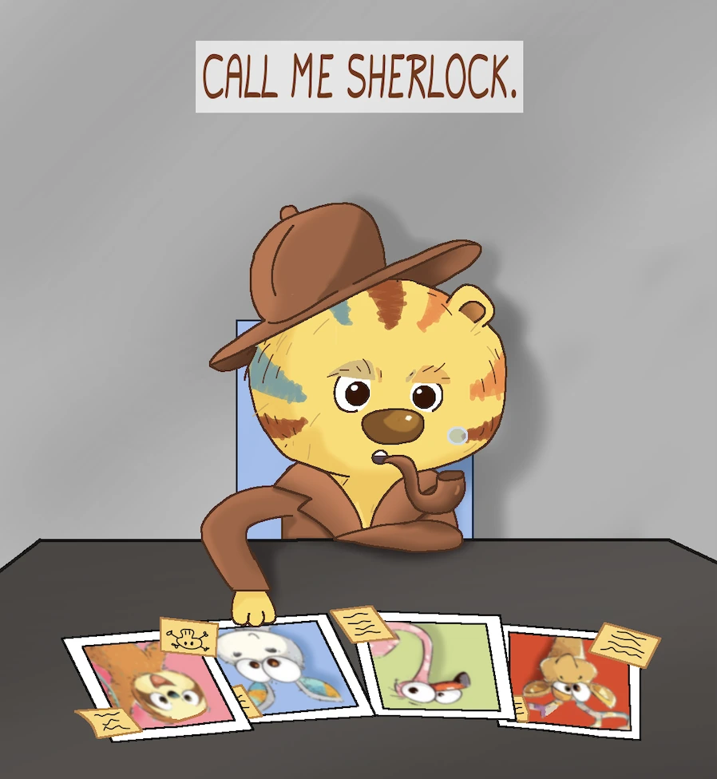
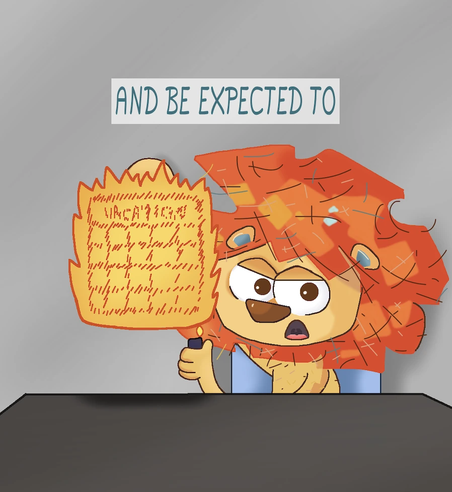

Vilde venner
En kort animationsvideo til Instagram.
Format: Animationsvideo til SoMe
Værktøjer: Krita · Adobe Premiere Pro
Introduktion
“Vilde venner" er en underholdende animationsvideo skabt til Instagram, hvor blikfang og fortælling skal fungere på få sekunder. Med en tydelig streg, stærk timing og visuel rytme formidler videoen et lille drama – tilpasset det hurtige tempo og den korte opmærksomhed på sociale medier.
Udfordringer
Hvordan fortæller man en historie, der smækker fra første frame – og holder blikket fanget, før tommelfingeren swiper videre?
Målet var at skabe:
- En visuel fortælling, der fanger opmærksomheden lynhurtigt.
- En animation, der fungerer uden lyd – med blikfang og undertekster.
- Et stærkt og enkelt udtryk, der læses tydeligt på mobilskærme.
Løsning
Projektet blev udviklet med frame-by-frame animation i Krita, hvor jeg skabte 280 individuelle frames. For at sikre overblik og flydende sekvenser arbejdede jeg med en spritesheet-lignende struktur, selvom outputtet var video.
I Adobe Premiere Pro finpudsede jeg tempo og rytme og tilføjede undertekster og lydeffekter. Underteksterne er bevidst integreret som en aktiv del af fortællingen, så videoen fungerer optimalt i autoplay uden lyd.
Nøgleelementer:
- Hurtige klip og stærk visuel timing.
- Bevidst mimik og overdrivelse i karakterdesign.
- Undertekster og klipperytme tilpasset SoMe-format.
 



Designmæssige valg
Stilen er enkel og kontrastrig, så karaktererne fremstår tydeligt på små skærme. Farverne er valgt for at skabe blikfang og understrege stemningen. Bevægelse og mimik er overdrevet for at forstærke det humoristiske udtryk og skabe energi.
Det visuelle udtryk er kendetegnet ved:
- Klare kontraster og farver med høj læsbarhed.
- Markant og levende stregføring.
- Overdrivelse til understøttelse af humoren.
Fagligt udbytte
Projektet har givet mig praktisk erfaring med at skabe indhold, der er optimeret til sociale medier – både visuelt og teknisk.
Jeg har opnået:
- Styrkede færdigheder i frame-by-frame animation og spritesheet-tænkning.
- Erfaring med rytme og klipning i Premiere Pro.
- En skærpet forståelse for samspillet mellem tempo, format og platform.
Disse erfaringer tager jeg med videre i fremtidige projekter med fokus på digital storytelling og SoMe-kommunikation.
Tags:
- Animation
- SoMe
- Krita
- SoMe-sultan
- Premiere Pro
- Humor
- FrameGame
- Mikrofortælling
- Kort format
- Karakterdesign